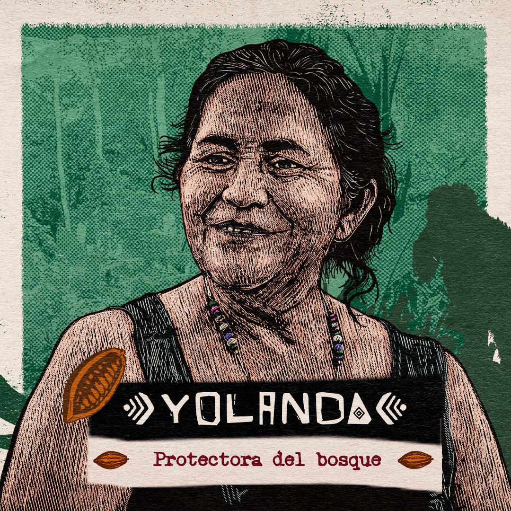
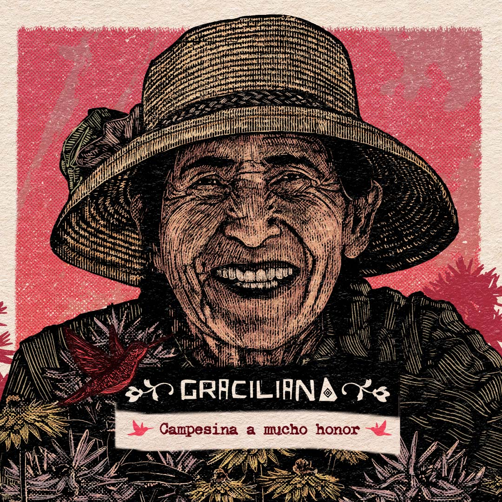
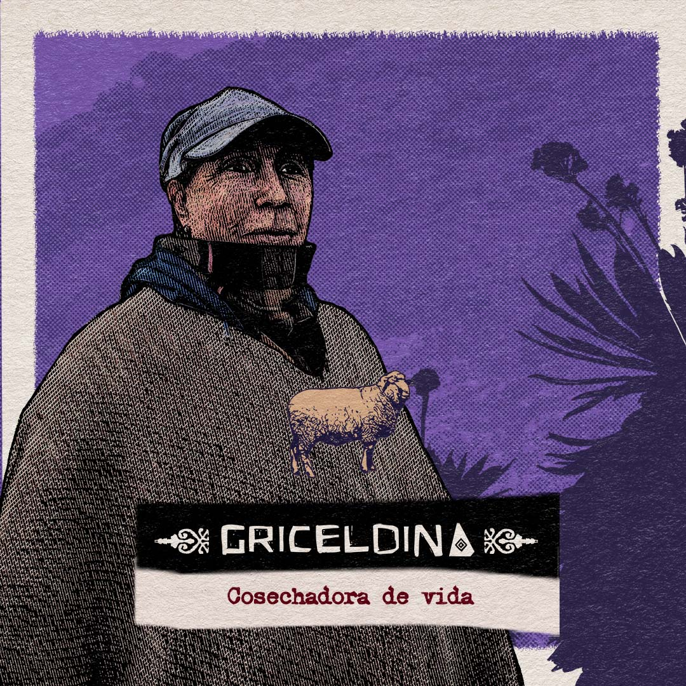

Capítulos
En este capítulo se entremezclan las historias de Fabriciano Ortiz, de 45 años, un avezado agricultor de ladera, custodio y defensor de semillas, que cuida con esmero su pequeña parcela en el altiplano cundiboyacense, y de José Armando Rodríguez, apodado Toto, de 28 años, y Yolanda Castro Hermida, de San José de Fragua en el Caquetá, líderes de la primera escuela campesina de científicos locales.

Con una particular vocación por retornarle al bosque lo quitado, demuestran una fuerte voluntad de acción, vitalidad y energía que ponen al servicio del territorio. En el capítulo guían a un grupo de jóvenes de la Escuela de Científicos Locales en actividades de investigación, búsqueda de las chapolas, y la siembra de árboles nativos en la ronda hídrica cercana a sus parcelas. El conflicto armado, la ganadería y los cultivos de uso ilícito prosperaron en esta región echando abajo miles de hectáreas de selva. Toto y Yolanda manifiestan de manera crítica cómo la energía humana se encauza vorazmente hacia la destrucción y el acaparamiento del territorio, pero a la vez, nos motivan a reflexionar acerca de cómo podemos redireccionar esa energía hacia procesos de restauración y agroforestería.

Fabriciano ha logrado desarrollar un pensamiento profundo puesto al servicio de una agricultura limpia de productos industriales. Como guardián de semillas expresa una evidente devoción por lo sagrado de la vida y manifiesta una postura crítica ante las semillas transgénicas que no pueden ser reproducidas. La selección de semillas para la siguiente siembra, el cuidado de su cultivo y su participación como activista en un evento de intercambio de semillas nativas en Ramiriquí, serán las guías de acción para este capítulo.

Con una particular vocación por retornarle al bosque lo quitado, demuestran una fuerte voluntad de acción, vitalidad y energía que ponen al servicio del territorio. En el capítulo guían a un grupo de jóvenes de la Escuela de Científicos Locales en actividades de investigación, búsqueda de las chapolas, y la siembra de árboles nativos en la ronda hídrica cercana a sus parcelas. El conflicto armado, la ganadería y los cultivos de uso ilícito prosperaron en esta región echando abajo miles de hectáreas de selva. Toto y Yolanda manifiestan de manera crítica cómo la energía humana se encauza vorazmente hacia la destrucción y el acaparamiento del territorio, pero a la vez, nos motivan a reflexionar acerca de cómo podemos redireccionar esa energía hacia procesos de restauración y agroforestería.
Este capítulo entrelaza la historia de Graciliana Callejas, de 65 años, campesina minifundista en el municipio de Turmequé, Boyacá, una mujer soltera e independiente que ha logrado mantenerse con dignidad en un mundo machista, y la historia de don Fidel Escorcia, de 70 años, un pescador artesanal de la ciénaga Colombia y el río Man, en el bajo Cauca antioqueño, destacado líder de la Asociación de Pescadores de la región.

Fidel se muestra como ejemplo de resiliencia, y de cómo el conocimiento produce abundancia. Junto a su hermano, se alista para una faena de pesca que promete ser muy buena, pues el invierno ha llenado la ciénaga, y el agua ha desbordado los diques que terratenientes inescrupulosos han puesto para desecar, minar y potrerizar baldíos. Su detallado conocimiento del mundo natural le permite tener éxito en sus jornadas de pesca. Su historia refleja cómo la naturaleza se renueva como él, y cómo la vida siempre vuelve a su cauce y gana la partida. Mantiene una posición crítica frente a la visión mercantilista de la vida y el individualismo que no contempla el bienestar común y empobrece la biodiversidad.

Graciliana es ejemplo de autosuficiencia y dedicación que le permiten garantizar una soberanía alimentaria. Contrasta su soledad con una fuerte devoción religiosa a los santos dadores de vida, como San Isidro. Su gran conocimiento empírico, su curiosidad por conocer cómo funciona el mundo y su dedicación ejemplar a sus animales y cultivos, la ha llevado a tener una mano milagrosa que genera mucha abundancia en poco territorio. Una visita a Turmequé donde se enfrenta a la postura ventajosa de los comerciantes de ganado, el cuidado de sus animales y cultivos son las acciones guías de su historia.
Este capítulo conjuga las historias de Balvino Avellaneda, de 70 años, su esposa Griceldina Amado y su familia extensa en los fríos valles del páramo de Pisba y de Leonardo Díaz, de 60 años, líder comunitario afro de la vereda Las Brisas, municipio de Suárez en las tierras cálidas del norte del Cauca.

Leonardo se muestra como ejemplo de vida centrado en el bien común. Tiene la capacidad de soñar el futuro y volverlo realidad. En su “cuaderno de sueños” están consignados dibujos y textos de sus numerosos proyectos comunitarios: el mejoramiento de las parcelas y la construcción de la carretera, la piscicultura, etc. El trabajo colectivo en la vereda Las Brisas ha permitido que la comunidad prospere, sea autónoma y autosuficiente. Iniciativas como la creación y formación de un grupo musical intercultural de población indígena, afro y campesina en el municipio ha resaltado la importancia de construir comunidad desde la diversidad de pensamientos y quehaceres. El libro de los sueños es una invitación para comprender que la vida se hace acompañada, que nadie está solo y que los propósitos del bien común son los que le dan sabrosura al día a día.Leonardo se muestra como ejemplo de vida centrado en el bien común. Tiene la capacidad de soñar el futuro y volverlo realidad. En su “cuaderno de sueños” están consignados dibujos y textos de sus numerosos proyectos comunitarios: el mejoramiento de las parcelas y la construcción de la carretera, la piscicultura, etc. El trabajo colectivo en la vereda Las Brisas ha permitido que la comunidad prospere, sea autónoma y autosuficiente. Iniciativas como la creación y formación de un grupo musical intercultural de población indígena, afro y campesina en el municipio ha resaltado la importancia de construir comunidad desde la diversidad de pensamientos y quehaceres. El libro de los sueños es una invitación para comprender que la vida se hace acompañada, que nadie está solo y que los propósitos del bien común son los que le dan sabrosura al día a día.

La historia de Balvino muestra la importancia del cuidado en una familia extensa, refleja el valor de la comunión con los ciclos naturales del páramo, y el apoyo de la familia. Se resalta en esta familia el trato dulce con el territorio, los animales y entre ellos mismos. La preocupación por la reducción en el caudal de agua en su finca, lleva a Balvino a remontar la cordillera hacia la laguna que surte de agua a la región. Esta acción, así como el arte de la hilandería artesanal, el trabajo en el cultivo de papa son los ejes principales de este relato.
La historia de Balvino muestra la importancia del cuidado en una familia extensa, refleja el valor de la comunión con los ciclos naturales del páramo, y el apoyo de la familia. Se resalta en esta familia el trato dulce con el territorio, los animales y entre ellos mismos. La preocupación por la reducción en el caudal de agua en su finca, lleva a Balvino a remontar la cordillera hacia la laguna que surte de agua a la región. Esta acción, así como el arte de la hilandería artesanal, el trabajo en el cultivo de papa son los ejes principales de este relato.